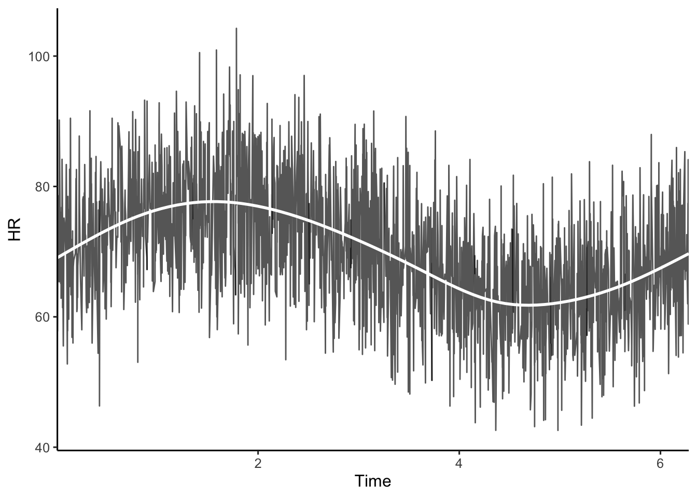

3.1 Introduction to the Concept of Rates of Change
I want to start with a confession. For a long time, I was terrified of calculus.
When I was an undergraduate in kinesiology, math felt like a wall of cold, gray stone standing between me and the “real” science I wanted to do. I wanted to understand why an athlete’s heart recovers faster than mine, or how the nervous system coordinates a perfect jump shot. But when I opened a textbook and saw a derivative (that skinny, intimidating \(dy/dt\)) my brain would effectively shut down. It felt like a foreign language that had nothing to do with the warmth of human skin or the electric hum of a muscle fiber.
It wasn’t until I started my research in neurophysiology and spent late nights staring at heart rate variability (HRV) traces that the wall finally crumbled. I realized that my fear came from a fundamental misunderstanding: I thought math was about finding “the answer”. It’s not. In physiology, math (specifically the concept of rate of change) is about telling the story of the transition.
We spent Chapter 2 getting our hands dirty with R, learning how to store data and navigate the environment. But data is often just a collection of snapshots. If you take a picture of a runner at the 10-meter mark and another at the 50-meter mark, you have two data points. But the “life” of the sprint isn’t in those two points. It’s in the blur between them.
That blur is the rate of change.
3.1.1 The Speedometer of the Soul
Imagine you are driving down a highway at sunset. If you look at your odometer, it tells you how far you’ve come (that’s your state). But if you look at your speedometer, it tells you how your state is changing right now.
In physiology, we are obsessed with speedometers.
When we talk about a “heart rate”, we aren’t talking about a static quantity like the number of fingers on a hand. We are talking about a frequency, a rate of events per minute. When we talk about VO2 (oxygen consumption), we aren’t just looking at a volume of air; we are looking at how fast that air is being processed by the mitochondria. Everything we care about in the human body is a measurement of how one thing changes with respect to another, usually, with respect to time.
I remember the first time I tried to manually calculate the “slope” of a heart rate recovery curve in an Excel sheet. I was frustrated. I was trying to fit a straight line to something that clearly wasn’t straight. The heart doesn’t slow down in a linear, boring way. It drops quickly at first (a sudden, dramatic withdrawal of the sympathetic drive) and then it tapers off into a slow, elegant glide back to baseline.
That “drop” and that “glide” are different rates of change. If I only looked at the start and the end, I would miss the most interesting part of the physiology: the dynamics.
As a researcher in cardiac autonomic modulation, I spend a lot of time thinking about the dynamics of the nervous system. You have the sympathetic nervous system (the accelerator) and the parasympathetic system (the brake). At any given millisecond, your heart rate isn’t “set” to a value; it is being pushed and pulled.
If the sympathetic system fires, the rate of change of the heart rate becomes positive (it starts to climb). If the vagus nerve (parasympathetic) releases a burst of acetylcholine, the rate of change becomes negative (it drops).
When I finally started teaching myself R, I realized that I could actually code these “pushes” and “pulls”. I stopped seeing the heart rate as a column in a spreadsheet and started seeing it as the ghost in the system, an emergent property of these competing rates. This shift in perspective changed everything for me. Instead of asking “What is the heart rate?”, I began asking “How fast is it changing, and what is driving that change?”
3.1.2 The Philosophy of the Infinitesimal
Here is where it gets a little philosophical, and where the beauty of the architecture of life really shines through.
In classic statistics, we often look at the “mean” or the “average”. We take a bunch of measurements over ten minutes and say, “The average rate was X”. But life doesn’t happen in ten-minute averages. Life happens in the now.
The rate of change (i.e., the derivative) is the mathematical way of asking, “What is happening at this exact, infinitesimal slice of time?” It’s the slope of a curve if you were to zoom in so far that the curve looks like a straight line.
For a kinesiologist, this is vital. Think about a muscle contraction. If you’re measuring force output on an isokinetic dynamometer, the “average” force of a three-second contraction tells you very little about the explosive “rate of force development” (RFD) in the first 50 milliseconds. That RFD is a rate of change. It’s the difference between a high-performance athlete and someone who is just moving their arm. It’s the “snap” in the system.
3.1.3 Why We Use R to Think Dynamically
You might be wondering: “If this is just about slopes and speedometers, why do I need to learn R? Can’t I just calculate this in my head?”
The problem is that in the human body, everything is connected. The rate at which your heart rate changes depends on your current blood pressure. The rate at which your blood pressure changes depends on your current vascular resistance. Your vascular resistance depends on local metabolic byproducts, and so on.
This is a coupled system. It’s a massive, beautiful web of rates of change all influencing each other.
When I was trying to learn this on my own, I would get overwhelmed. I’d try to visualize three or four things changing at once and my mental model would crash. R is the external brain that lets us handle that complexity. By using packages like deSolve (which we’ll explore later), we don’t have to solve the math ourselves. We just have to describe the rules of the system. We tell R: “The heart rate increases based on rule A, and it decreases based on rule B”. R then calculates the “blur between the snapshots” for us.
The R Perspective
In the world of the tidyverse, we often use the function diff() to look at the difference between consecutive points in a vector. It’s the simplest way to see a “rate” in your raw data. If you have a vector of heart rates:
hr <- c(60, 62, 65, 70)
diff(hr) gives you c(2, 3, 5).
That little output is the “push” of the system. It’s the first step toward building a dynamic model. Throughout this chapter, we’ll move from these simple “differences” to the smooth, continuous “derivatives” that allow us to simulate the dynamics of the system with precision.
3.1.4 A Personal Note on the Learning Curve
If you feel like your brain is stretching right now, that’s good. That’s the feeling of a new mental model forming.
When I first started trying to think about physiology in terms of rates, I felt like I was back in that undergraduate math class. I felt “slow”. I’d look at a ggplot of a simulation and think, Wait, why did the curve bend that way? But then, I’d go back to the code, change one parameter (maybe I’d make the “vagal brake” a little stronger) and hit ‘Run’. Seeing the curve change instantly on the screen gave me an intuitive “feel” for the math that no textbook ever could. I wasn’t just solving an equation; I was performing a virtual experiment.
And I think that’s the secret: Dynamics must be felt, observed! Not just calculated.
In the next section, we’re going to get more specific. We’re going to look at how we take these abstract “pushes and pulls” and turn them into the formal language of derivatives (but we’ll do it through the lens of stuff we actually care about), like the rate of oxygen consumption during a warm-up or the decay of a hormone in the bloodstream.
We aren’t just learning math. We are learning how to read the blueprints of the human machine. We are learning to see the world not as a collection of still objects, but as a continuous, flowing process.
Before you move on, take a breath. Notice the way your chest rises and then falls. That’s a rate of change. The speed of your inhale, the pause at the top, the rush of the exhale. It’s all math, it’s all physics, and it’s all incredibly personal.
Are you ready to look closer at the blur?
A Note on Intuition
If you’ve ever felt the “burn” in your muscles during a sprint, you’ve felt a rate of change. That burn is the accumulation of metabolites. The rate at which they accumulate is faster than the rate at which your blood can clear them. When the “In” rate is higher than the “Out” rate, the state (the burn) increases. That is the fundamental logic of every model we will build in this book.
3.2 Understanding Derivatives in a Physiological Context
I want to take you back to a specific Tuesday night in my last year of grad school. I was in the intensive care unit (ICU) of my local hospital doing a clinical internship, the kind of environment that strips away the abstract comfort of a university lab and replaces it with the cold, hard reality of human fragility. The ICU was quiet, save for the hum of the ventilation system and the rhythmic, almost hypnotic beep, beep, beep of a heart rate monitor in the next room.
There was a young woman in that room. She have been in a horrific car accident and was quite literally fighting for her life. Every pulse on that monitor was a signal from the front lines of that fight.
I was sitting in front of a monitor down the same hallway, staring at a CSV file I’d just exported from the hospital’s telemetry system. It was a mess, thousands of rows of R-R intervals, the millisecond-timing between each heartbeat. To anyone else, it was just a massive column of integers. But I was hunting for something specific: I wanted to see the dynamical behavior of her parasympathetic nervous system. I wanted to see if her “vagal brake” was still functional, or if the trauma had silenced the most elegant part of her autonomic architecture.
In physiology, we talk about “kinetics” all the time (e.g., the speed of a muscle contraction, the rate of oxygen uptake). But that night, as I tried to calculate the slope of her heart rate changes manually in a spreadsheet, I realized I was fighting the data. I was trying to treat her heart like a staircase (i.e., calculating the difference from one step to the next) when her heart was trying to be a slide.
The heart doesn’t “jump” from 80 to 90 beats per minute. It glides. It accelerates. It plateaus. It’s a continuous, fluid transition. That was the night I stopped seeing numbers and started seeing derivatives.
When we look at a derivative like \(\frac{d HR}{dt}\), we aren’t just looking at a math symbol. We are looking at the intention of the physiological system. We are looking at the “will” of the body to change its state.
3.2.1 The Velocity of Survival
Think about that beep in the ICU. The value on the screen might say 110 bpm. That’s the state, the current snapshot of where the system is. But in a crisis, the state matters far less than the rate at which the system was changing.
If a patient’s heart rate is 110 and the derivative \(\frac{d HR}{dt}\) is zero, they are stable. They are holding their ground. But if the heart rate is 110 and the derivative is positive (i.e., the slope is tilting upward) the system is under pressure. It is accelerating away from equilibrium.
In my neurophysiology research, I’ve learned that the derivative is the primary language of the nervous system. Your brain doesn’t just send a signal that says “Be at 120 bpm”. It sends a signal that changes the velocity of the heart.
When that young woman moved or when the nurses adjusted her IV, I could see the derivative spike. That spike was the vagal withdrawal (i.e., the instantaneous lifting of the parasympathetic brake). In physiology, we often measure how fast a person can “turn on” their system. A steep, aggressive derivative in the first few seconds of a challenge is a sign of a high-performance, responsive architecture. A flat, sluggish derivative? That’s the ghost in the machine losing its voice.
3.2.2 The “In-Out” Logic of the Blueprint
To understand derivatives, you have to understand the most fundamental equation in all of physiology. I call it the “Balance of the Ghost”.
Everything in the body, from the glucose in your blood to the norepinephrine in your synapses, follows this rule. The rate of change (\(\frac{dy}{dt}\)) is simply the difference between what is being added (Sources) and what is being removed (Sinks).
That night in the ICU, the young woman was on a variety of medications delivered via IV drip. This is a perfect place to see the derivative in action.
The Source: The IV pump is adding a drug at a constant rate.
The Sink: Her kidneys and liver are filtering that drug out at a rate proportional to how much is already in her blood.
When the pump starts, the “Source” is much larger than the “Sink”, so the derivative \(\frac{d |Drug|}{dt}\) is positive. The concentration climbs. But as the concentration gets higher, the “Sink” (the clearance) gets faster. Eventually, the Source and the Sink perfectly balance each other out. The derivative hits zero. This is what we call Steady State.
In modeling, we don’t look for the steady state; we are interested in how the system gets there. Does it roar up and over-shoot? Does it crawl up slowly? The “shape” of that approach (i.e., the changing values of the derivative) is where the real diagnostic power lives.
3.2.3 VO2 Kinetics: The Metabolism of Motion
While my heart was in the ICU that night, my mind kept drifting back to the athletes I worked with in the kinesiology lab. The math is identical.
When you start a sprint, your muscles’ demand for ATP is a “Source” that turns on instantly. But your aerobic system (your oxygen consumption, \(VO_2\)), is a “Sink” that takes time to ramp up. The derivative \(\frac{d VO_2}{dt}\) describes the kinetics of this response.
I remember my first time using R to plot the residuals of a \(VO_2\) fit. I realized that the “slow component” of oxygen uptake (that frustrating upward creep during heavy exercise) was essentially a failure of the derivative to hit zero. The “Sink” was never quite catching up to the “Source”. The metabolic architecture was failing to find a balance.
By looking at the derivative, we can distinguish between a heart failure patient and an Olympic rower. They might both reach a \(VO_2\) of 2.0 L/min, but the rower gets there with a massive, explosive derivative, while the patient’s system groans and struggles with a tiny, agonizingly slow rate of change.
The “Aha!” Moment
If you’ve ever felt your heart “skip a beat” or felt a sudden rush of adrenaline, you’ve experienced a massive, instantaneous shift in your derivatives. The state (your heart rate) didn’t change much in that first half-second, but the derivative went from zero to infinity and back. That “push” is the math of the nervous system making its presence known.
If this were a traditional math book, I’d give you a sheet of calculus problems to solve. I’d ask you to derive the slope of a curve using pen and paper. But I’m 26, I’m a researcher, and I know that’s not how we actually work in the 21st century.
We use R because R allows us to calculate derivatives from messy, real-world data without getting bogged down in symbolic proofs. In the ICU, my data was “noisy”. Sensors move, patients shift, and the signals get jittery. If you try to calculate a derivative from noisy data using simple subtraction, you get garbage.
In R, we use tools like smoothing splines or local regressions to find the “true” slide beneath the “noisy” staircase.
# A quick peek into the R logicx <-runif(2000, 0, 2*pi) |>sort()y_true <-70+8*sin(x)y_deriv <-8*cos(x)y <- y_true +rnorm(2000, 0, 8)heart_data <-data.frame(Time =rep(x, times =3), HR =c(y, y_true, y_deriv),Type =rep(x =c("Observed HR", "True HR", "Derivative (or Impulse)"), each =2000))library(ggplot2)theme_set(new =theme_classic(base_size =12))ggplot(heart_data, aes(Time, HR, col = Type)) +facet_wrap(~Type, nrow =3, scales ="free_y") +geom_hline(data =data.frame(yintercept =0, Type ="Derivative (or Impulse)", HR =0, Time =0), aes(yintercept = yintercept),linetype =2) +geom_line() +scale_x_continuous(expand =c(0,0)) +scale_color_brewer(type ="qual", palette =6) +labs(x ="Time (Hours)")

When I started doing this in my own research, it felt like I’d been given a superpower. I could take a jagged, ugly heart rate trace and extract the clean, elegant “velocity” of the nervous system. I wasn’t just guessing about the “vagal brake” anymore; I was measuring the exact rate at which it was being applied.
3.2.4 The Philosophical Weight of the Derivative
As the sun began to rise over the hospital that Wednesday morning, the young woman was still stable. The beep was still there. And I realized that the derivative is actually a measure of resilience.
A resilient system is one that can generate a large derivative when needed to return to balance. If your blood pressure drops, a resilient architecture responds with a sharp, positive derivative to bring it back up. If your heart rate spikes due to stress, a resilient system uses a powerful negative derivative to pull it back down.
When we model physiology, we are building “blueprints of resilience”. We are trying to understand what makes a derivative strong or weak. Is it the number of receptors on the heart? Is it the density of the mitochondria in the muscle? Is it the “gain” of the neural feedback loop?
I want you to stop thinking of your data as a collection of static points. I want you to start looking for the continuous slide. Every time you see a curve in your plots, ask yourself:
How steep is that slope right now?
What is the ‘Source’ pushing it up?
What is the ‘Sink’ pulling it down?
The derivative is the “ghost” actually doing the work. The numbers on the spreadsheet are just the footprints it leaves behind.
3.2.5 The R-R Interval Trap
I need to warn you about something I learned the hard way that night. When you’re working with R-R intervals (the time between heartbeats), the data is inherently “discrete”. Each beat is a single event.
However, the nervous system is continuous. The vagus nerve is firing at all times, even between the beats. When we calculate a derivative like , we are essentially “hallucinating” a continuous line through those discrete points.
In R, we have to be careful. If you have a heart rate of 60 bpm, you only get one data point every second. If you’re looking at a transition that happens in two seconds, you only have two points! This is why we often use interpolation to create a continuous signal before we take the derivative. It’s a bit of digital magic that allows us to see the “continuous intention” behind the “discrete events”. We’ll dig into the code for this in the next chapter, but for now, just remember: the body is a slide, even if our sensors only see the stairs.